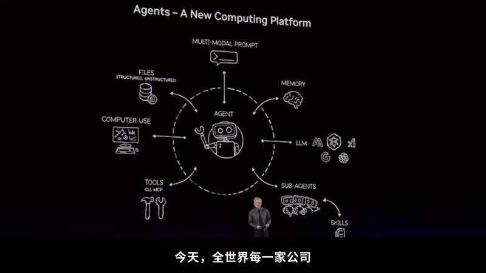

新智元报道
新智元报道

就在刚刚，我们看到了不少令人意外的数据。
到2031年，人工智能预计将累计创造22.5万亿美元的全球经济价值。
预计到2030年，全球AI算力缺口将达到惊人的3809亿美元（近3万亿人民币）！
另外，2026年中国智能体部署的渗透率高达81.0%，全球领先！
而且，令人意外的是，2026年，中国人工智能城市排行榜大变样了。
北京、杭州、深圳，处于TOP 3。
这些硬核信息，都来自于一份重磅报告。
就在最近，IDC与浪潮信息联合发布了首份智能体基础设施研究报告——《2026年中国人工智能计算力发展评估报告》。
从这份研究报告可以看出：Agent正在重塑一切，而它带来的直接后果，就是算力的一场大饥荒，随之而来的就是一场大洗牌。

就在今天，OpenAI官宣：他们内部的神秘模型，在24天内攻破了超100个世界级数学难题。解题的背后，完全是一群智能体在协作。
OpenAI联创Andrej Karpathy曾断言：「AI智能体真正落地还需要10年。」
如今看来，这并非一句悲观的预测，而恰恰宣告了Agent「黄金十年」的正式开启！
据OpenAI披露，为了解决NS方程相关问题， 10,000个并发智能体耗时约88个小时。
它们相互发送了490万条消息，总共消耗了约3000亿个输出Token！
单单在解决NS问题的核心阶段，这些智能体就发送了270万条消息，耗费了1300亿个Token。随后耗时17小时，完成了Lean形式化与验证。
3000亿Token相当于超过2200套《三体》 的内容量，或者大约相当于中国国家图书馆的文本资源总量的一半。
而普通人一辈子说完的话，大约只有 6 亿 Tokens。也就是说，500个人一辈子「生成」的Token，这群智能体只要88小时。人类或许最终能更优美地解决NS方程，但在速度上和思考规模上，却难以跟这些智能体匹敌。
这是一个标志性的数字。例如，GPT-3模型在训练时使用了3000亿个Token，而现在，一个多智能体科研任务的累计Token消耗量，就达到了同样等级。
但这只是世界Agent经济的冰山一角。
年初OpenClaw风靡一时。随后，在英伟达GTC大会，黄仁勋定下了基调，实质上宣告：
现在世界上每一家公司都需要智能体战略。

而在中国智能体部署渗透率上，中国领跑世界，今年已达81.0%，高于全球领先水平的78.1%。
但可惜的是，昔日大厂和资本疯狂囤积的旧算力卡，如今可能要变「废铁」了。
过去两年，所有人都在卷「AI训练」，算力中心拔地而起，成千上万张GPU被塞进机房。
但今天，智能体（Agent）正将这些投资无情地拍在沙滩上。
AI算力的评价标准和竞争逻辑，已经在短短一年内发生了天翻地覆的改变。
如果说大模型发展的1.0阶段是「千模大战」的算力囤积，那么现在的2.0阶段，计量单位已经从「算力规模」变成了「Token的生产效率」。

为什么说Agent是新变量，彻底改变了潮水的方向？
我们需要先理解Agent与过去聊天机器人的根本区别。
以前的大模型是一次性问答，几十个Token就搞定了；但Agent是一个「数字员工」，它需要多轮推理、调用工具、跨系统协作，还要时刻保存「记忆」（上下文）。
这带来了一个极其恐怖的乘数效应：
IDC给出了一组让人倒吸一口凉气的数据：
预计到2030年，全球活跃智能体数量复合增长率将达到129.8%，但同期的Token消耗量复合增长率，却高达骇人听闻的4822.6%！
Token消耗的增速，是智能体数量增速的整整37倍！
换句话说，AI不再只是偶尔聊天的玩具，而是7x24小时全天候在后台疯狂运转的「耗电/耗算力巨兽」。
未来4年，智能体的数量可能是几十倍的增长，但Token的消耗是数百万倍的增长。
当所有的企业都在迈向OPC，试图用Agent替代传统人力时，算力的需求呈现出了指数级的暴涨。
这也直接导致了一个极其残酷的现实：算力不仅不够用，而且越来越贵。
IDC数据显示，2025年到2030年我国智能算力和通用算力增速预期分别从46.2%上调到50.3%、从18.8%上调到27.7%。
中国智能算力规模2025年达1,371.1 EFLOPS，2026年预计增至2,576.5 EFLOPS、同比增长87.9%，2030年将达10,524.3 EFLOPS，2025—2030年复合增长率50.3%，较上一版本预测的46.2%显著上调。同期，通用算力规模2025年为85.8 EFLOPS，2026年预计增至102.1 EFLOPS、同比增长19.0%，2030年将达291.2 EFLOPS，复合年均增长率27.7%，亦高于上一版本预测的18.8%。
既然需求这么大，前两年各地建了那么多智算中心，囤了那么多卡，难道派不上用场吗？
答案是：错配，严重的结构性错配。
现实很残酷——有GPU，绝不等于有适合智能体的算力。
过去两年，大公司买的算力卡、各地建的智算中心，绝大多数面向「训练」场景。
训练追求的是算力的峰值，但Agent时代的「推理」场景，追求的是超大容量的上下文保存（KV Cache）、低时延和极高的吞吐量。
这就像你买了一支顶配的冲刺接力队，现在却要求他们去跑一场永无止境的马拉松，而且还要边跑边解复杂的微积分。
此外，还有一些被淘汰下来的中低端算力卡，算力值本就不高，显存容量更是可怜，根本存不下Agent动辄几十万Token的长链路记忆。除了给初学者测试练手，真正的商业价值几乎为0。
既然存量资源存在「结构性错配」，那直接砸钱，按需增加新供给、去买适合Agent的算力卡不就行了？
这正是目前行业面临的第二个困境：物理世界的供给增速，根本追不上数字世界的需求增速。
尽管当下整个AI产业的算力投资力度空前，动辄百亿千亿，但供给扩张却难以同步。
因为高端芯片、HBM（高带宽内存）、服务器CPU等核心部件的产能扩张周期，普遍远远长于人工智能需求的爆发节奏。投资额的成倍增长，并不能在当下等比例转化为真实的算力供给。
以Agent极度渴求的HBM为例，随着Agent对长上下文记忆的要求越来越高，KV Cache 既吃容量又吃带宽，存储成为关键瓶颈。
虽然存储大厂们都在疯狂锁定产能，但半导体产线的建设与扩容有着不可逾越的物理时间规律。 你今天砸下百亿美金，新建一条先进封装或存储产线到真正上线投产，也需要极其漫长的周期。
在当前的算力赛道上，有钱，你也买不到当下的时间。
更致命的是，能源约束正在让这一供需矛盾雪上加霜。
数据中心的用电需求，正随着智能体的规模化、7x24小时全天候运行而激增。
但电力供给受制于电网扩容与关键电力设备交付的长周期。
一个智算中心可能几个月就能封顶，但支撑它运转的区域变电站和电网扩容，却需要数年之久。电力扩容的节奏，已经显著慢于算力建设的周期。
IDC预测，到2027年，全球AI算力需求满足率将跌至71%的谷底，这意味着有近三成的算力需求根本得不到满足。
算力供给错配，叠加电力短缺等多种其他因素，全球AI行业或恐迎来智能体算力荒。
既然Agent如此饥渴，我们该如何拯救算力荒？
答案是：彻底抛弃过去的「堆卡」思维，AI基础设施正在经历系统性重构。
智能体不再卷「峰值算力」，而是卷「持续的任务执行」，这就要求基础设施的优化目标，必须从「单点性能优化」转向「任务级系统协同优化」。
这一转变，负载变了，焦点变了，采购变了，最后部署变了。
过去，GPU等算力阶段性打短工，现在更多是具备长期稳定、高并发特征的7x24小时「生产型负载」。
Agent时代AI基础设施的竞争核心是「高效持续生产Token」，实现计算、存储、网络/数据中心、终端以及模型、调度和Token运营的全系统协同。
客户的采购对象，正在从单纯买服务器、买GPU时长，升级为购买「模型能力与Token产出」。
跳出集中式的智算中心，云-边-端协同上阵，终端设备正式成为Agent的运行节点。
为了适应这种重构，报告指出，未来的计算产业竞争将彻底裂变为两条路线——「能力型智算」与「容量型智算」。
「能力型（Capability）智算」，生来就是为了捅破智能的「天花板」。
就像OpenAI用1万个Agent破解数学难题一样，依靠超节点、高速互连等系统级创新，提升算力承载超大模型和复杂任务的能力，不断突破智能上限。
「容量型（Capacity）智算」，则是为了让智能越来越便宜、丰富、易获得。
通过多元算力协同、推理解耦、全链条效率提升，把Token产出效率拉满，降低单位智能的成本，实现智能的规模化普惠供给。
围绕这两条路线，整个硬件生态都在发生系统级突变：
因此，AI基础设施不再只是一个跑训练或推理的铁盒子，而是一座围绕Agent开发、运行、治理的「全栈智能工厂」。
报告中的《各行业智能体落地成熟度与长期生产力影响分布矩阵》，体现了一条深不见底的鸿沟。
在成熟度的最右端，Coding（代码开发）和Work（办公任务）智能体遥遥领先，已经全面进入规模化应用。这很容易理解，代码世界的规则是百分之百数字化的，结果可验证（跑得通就是跑得通，报错了AI可以自己改）。
但在鸿沟的另一端，制造、医疗、能源、电力等实体行业，真正进入核心业务并形成完整闭环的比例，依然是尴尬的0%。
为什么传统行业落地这么难？「试错成本」与「结果验证」。
你不能让一个医疗Agent直接在病人身上试错，然后再把结果反馈给模型去优化；你也不能让一个制造Agent在没有绝对安全保障的情况下，去接管一条价值上亿的真实物理流水线。
但这并不意味着传统行业没有机会。
相反，IDC的报告指出，这些行业的「长期生产力重构潜力」恰恰是最大的 。因为它们具有极高的专业知识密度。一旦解决了数字孪生验证、人机协同责任边界等问题，Agent或将彻底颠覆这些行业。
在这份报告中，最引人注目的莫过于2026年中国人工智能算力城市排行榜的「大变局」。
北京稳居第一，杭州保持第二，而深圳，强势杀入前三，上海暂居其后。
为什么会发生这样的排位变化？
核心原因在于，游戏规则变了。
报告首次将「智能体应用落地」、「具身智能产业布局」、「大模型开发及推理算力基础设施建设」纳入了核心评价指标。
深圳进入前三，正是因为它死死把握住了Agent爆发与具身智能的硬件结合机遇。
深圳是AI服务器与算力芯片制造的重要基地，有着深厚的算力供给产业基础。当AI从虚拟的屏幕里走出来，进入工厂、进入实体机器人，深圳的算力供给侧优势瞬间被放大。
这给所有二三线城市提了个醒：未来的城市竞争，谁能提供最丰富的Agent落地场景（比如智能制造、智慧港口），谁就能在算力版图上撕开一道裂口。
面对如此海量的投入，一个避无可避的问题摆在所有人面前：企业真的赚到钱了吗？AI算力会过剩吗？
IDC副总裁周震刚给出了一个非常清醒的回答：「泡沫是存在的，但泡沫的出现不意味着市场没有价值。」
目前的阶段，就像当年早期的云计算大战。
大家都在扩产、抢地盘。在这个「抢跑」阶段，利润大部分都流向了上游的算力卡，以及再上游的半导体厂商。
甚至一些Token服务商在「赔钱卖吆喝」，试图「以时间换空间」，但这绝非长久之计。
目前爆火的AI短剧、一人公司OPC等，开始让第一批人尝到甜头，但市场终将回归商业本质，价格终将回归价值。
终局将是Token的精细化运营。
Token供应商或将通过Token路由技术，根据具体业务需求，将请求动态分配至更匹配的模型和算力资源，在交互性与吞吐量之间实现动态平衡，从而提升资源利用效率和用户体验，提升Token服务的利润空间。
泡沫破裂的那一天，不是AI的末日，而是洗牌的开始。
编辑：大卫 Aeneas